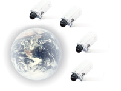

Surveillance
is quickly becoming one of the most important network video applications
by consistently meeting with the recent market predictions. Multimedia
surveillance solutions consist of multiple acquisition devices and involve
more computer vision, image processing, and communication expertise with
the increasing computational power, network bandwidth, and storage capacities.
In
order to bring forward the recent developments in this area, we organized
the Multi-Camera Surveillance Systems special session. The session would
emphasize novel techniques as well as systems consisting of multiple acquisition
devices such as video cameras, microphone arrays, motion sensors, etc.
Our aim is to provide an overview of the state-of-the-art and research
directions in the fields of
§Object
detection, tracking, and analysis by multiple cameras,
§Distributed allocation of video processing resources in intelligent video surveillance networks,
§Centralized
and distributed event analysis for surveillance applications,
§Audio/video
data fusion for multi-sensor systems,
§Video
indexing and retrieval for surveillance systems,
§Video
processing techniques integrated for vehicle traffic and commercial applications,
§Large-scale
video surveillance systems.
The
session would emphasize novel techniques as well as systems consisting
of multiple acquisition devices.
Organizers
Dr.
Fatih Porikli, Mitsubishi Electric Research Laboratories, email: fatih@merl.com
Prof.
Carlo Regazzoni, Univ. Genoa, email: carlo@dibe.unige.it
Notification
of acceptance: 3/1/2003
Final
paper submission: 3/31/2003
For
contributed papers, the electronic
submission of the papers should be done through the conference web site
by the deadlines given above. Please follow the link below for more information
about the paper format, submission, and review guidelines:
http://www.icme2003.org/Papers.asp
Some
of the invited papers are:
"From
Multi-sensor Surveillance Towards Smart Interactive Spaces"
Carlo
Regazzoni and
Luca Marchesotti
University
of Genoa
“A
Reconfigurable and Scalable Multi-Camera Visual Surveillance System”
Ahmed
Elgammal, Sernam Lim, and
Larry Davis,
University
of Maryland
"KNIGHT:
Real-time Video Surveillance & Monitoring System”
Omar
Javed and
Mubarak Shah
University
of Central Florida
"A
Multi-View Approach for Segmentation and Tracking People in a Cluttered
Scene"
Anurag
Mittal
Siemens
Corporate Research